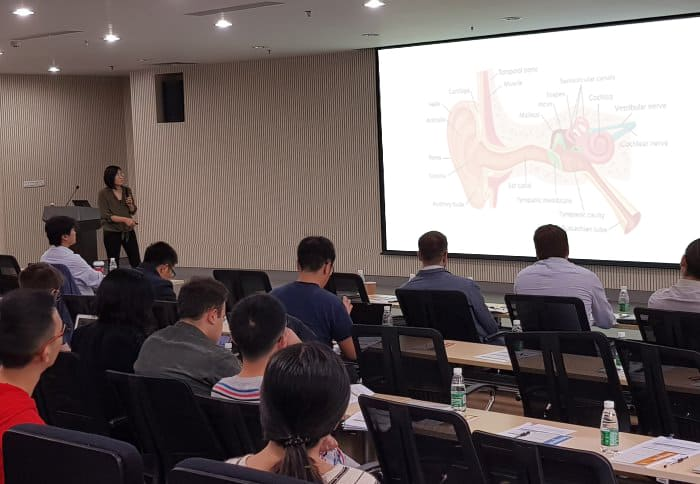

क्या श्रवण यंत्रों का युग समाप्त हो रहा है? निर्णायक उपचार 4 सप्ताह में स्वाभाविक रूप से सुनवाई बहाल कर देता है।
क्या नई पद्धति हियरिंग एड बाजार को समाप्त कर देगी? उत्कृष्ट विशेषज्ञों को इसमें कोई संदेह नहीं है कि यह होगा। एक प्राकृतिक मैक्रो-आणविक सूत्र के विकास के साथ, लंबे समय से प्रतीक्षित आता हैअच्छी सुनवाई की लड़ाई में सफलता।
नतीजतन, कई उत्तरदाताओं ने अपनी सुनने की तीक्ष्णता हासिल कर ली। साथ ही जिनके बहरे होने का खतरा था।
यह कैसे संभव है?
प्रयोगशाला अनुसंधान के एक वर्ष से भी कम समय के बाद, इसे विकसित करना संभव थाप्राकृतिक, सुरक्षित और उपयोग करने में आसानअपनी सुनवाई को मजबूत करने के लिए सूत्र।
पेशेवर पत्रिकाओं ने पहले ही इस उपचार को "ईएनटी के क्षेत्र में एक अग्रणी उपलब्धि" के रूप में सराहा है। इस फॉर्मूले की कार्रवाई के लिए धन्यवाद, यहां तक कि गंभीर श्रवण दोष वाले लोग भी कर सकते हैंप्राकृतिक सुनने की क्षमता हासिल करेंऔर हियरिंग एड पहनने की आवश्यकता से स्वयं को मुक्त करें।
"श्रवण यंत्र नाले में फेंके गए पैसे हैं!" इतना बोल्ड बयान देने में सक्षम होने के क्या कारण हैं?
नवीनीकरण सुनने के लिए मैक्रो-आणविक सूत्र के 14 हजार से अधिक संतुष्ट उपयोगकर्ताओं द्वारा इन शब्दों की पुष्टि पहले ही कर दी गई हैपहले ही अपने श्रवण यंत्रों को फेंक चुके हैं. इसलिए हमने इन उपकरणों पर करीब से नज़र डालने का फैसला किया। अधिक सटीक रूप से, जांचें कि उनके नुकसान क्या हैं और श्रवण यंत्रों का उपयोग करने वाले श्रवण बाधित लोगों को दैनिक आधार पर किन समस्याओं का सामना करना पड़ता है। यहाँ निष्कर्ष हैं:
- एक हियरिंग एड महंगा है
कैमरे की कीमत 2 से 12 हजार PLN है और यह एकबारगी खर्च नहीं है। आपको बैटरी की भी आवश्यकता है, जिसकी वार्षिक लागत PLN 400 से अधिक है! अगर कोई इतने पैसे को हल्के हाथ से खर्च कर सकता है, तो भी इस डिवाइस के अन्य नुकसान से बचा नहीं जा सकेगा
- यह शर्म और बेचैनी का कारण बनता है
श्रवण यंत्रों का सौंदर्य वांछित होने के लिए बहुत कुछ छोड़ देता है। हियरिंग एड पहनने वाले पीड़ित होते हैं क्योंकि उन्हें अक्षम माना जाता है। उन्हें बस अफ़सोस होता है जब सड़क पर लोग दया के साथ देखते हैं, "यह उसके कान से क्या निकल रहा है?"
- एक कष्टप्रद चीख़ का उत्सर्जन करता है
हियरिंग एड पहनने वाले अपने द्वारा सुनाई जाने वाली ध्वनि की खराब गुणवत्ता के बारे में शिकायत करते हैं। कैमरा कष्टप्रद चीख़ और शोर का उत्सर्जन करता है जो चिड़चिड़ापन और तनाव का कारण बनता है।
- यह संक्रमण का कारण है जो श्रवण हानि को बदतर बनाता है
उपकरणों कीटाणुरहित करने का विषय बहुत व्यापक नहीं है। हियरिंग एड में कवक विकसित हो सकता है, जिससे कान में गंभीर संक्रमण हो सकता है। ये, बदले में, आपकी सुनने की क्षमता को और भी खराब कर देते हैं।
- इसे पहनते समय यह केवल ध्वनियों की श्रव्यता को बढ़ाता है
पानी के संपर्क में आने से पहले उपकरण को हटा देना चाहिए, उदा। नहाने से पहले। आप बरसात के दिन समुद्र तट, स्विमिंग पूल या उसके साथ बाहर नहीं जाएंगे। इसे रात में भी उतारा जाता है। स्थायी रूप से सुनवाई बहाल करना संभव नहीं है।
यही कारण है कि मैक्रो-आणविक उपचार अच्छी सुनवाई की लड़ाई में एक वास्तविक सफलता है
श्रवण यंत्र पहने जाने पर केवल कृत्रिम रूप से ध्वनियों को कम करते हैं। दूसरी ओर, उपचार बिना हियरिंग एड के प्राकृतिक सुनने की क्षमता को बहाल करता है। कानों में प्राकृतिक तेल की बूंदों का दैनिक परिचय गंभीर सुनवाई हानि वाले लोगों में भी सुनवाई के प्रदर्शन को बहाल करता है।
हर कोई अब 100% कार्यात्मक सुनवाई हासिल कर सकता है
उपचार अब नाम से खुदरा में उपलब्ध है। सूत्र एक तैलीय रूप है जिसे पिपेट के साथ कानों पर आसानी से लगाया जाता है। इसका सेवन शरीर के लिए पूरी तरह से सुरक्षित है। अध्ययनों से यह भी पता चला है कि उपचार 97% से अधिक प्रभावी है। इसके लिए धन्यवाद, 38-93 वर्ष की आयु के लोगों ने केवल 4 सप्ताह में श्रवण हानि का मुकाबला करने के शानदार प्रभाव प्राप्त किए हैं। उनकी उम्र और सुनने की समस्याओं के कारण और लंबाई के बावजूद।
इन लोगों ने फार्मूला लगाने के तुरंत बाद कान की नली को साफ कर दिया। इसके लिए धन्यवाद, उन्होंने सुनने में 50% तक की वृद्धि की और बड़े स्थानों में ध्वनि की एक पूर्ण श्रेणी का अनुभव करना शुरू कर दिया। उपचार के बाद के दिनों में, इन लोगों ने मानव भाषण के प्रति कान की संवेदनशीलता को सक्रिय कर दिया, जिसकी बदौलत वे गली की हलचल में भी बातचीत को स्पष्ट रूप से सुनने लगे। फिर उन्हें कान नहर में अशुद्धियों के कारण होने वाले सिरदर्द और टिनिटस से छुटकारा मिला।
नतीजतन, उन्होंने मस्तिष्क में श्रवण केंद्रों के अधिभार को 80% तक कम कर दिया और 3 गुना अधिक ऊर्जा प्राप्त की। लेकिन यह सब कुछ नहीं है। 28 दिनों के उपचार के बाद, अध्ययन प्रतिभागियों ने सर्वसम्मति से स्वीकार किया कि उनकी सुनवाई तेज हो गई है। आज वे ठीक ऐसे सुनते हैं जैसे वे 20-25 साल के हों!
उपचार के प्रलेखित प्रभाव स्वयं के लिए बोलते हैं:

बैंगलोर के मिस्टर सुजीत कार्ला (72) भारत में का उपयोग करने वाले पहले लोगों में से एक हैं:

मिस्टर सुजीत कार्ला फोन पर सामान्य रूप से ड्रॉप्स की बदौलत बात कर सकते हैं।
"मुझे 40 साल की उम्र के बाद बहुत पहले सुनने में समस्या हुई है। मुझे लगा कि यह सामान्य है - मैं बूढ़ा हो रहा हूं इसलिए मेरी सुनवाई खराब है। लेकिन कुछ सालों के बाद, मुझे समझ नहीं आया कि वे मुझसे क्या कह रहे थे। मुझे यह कहते हुए शर्म आ रही थी: क्या? मैं सुन रहा हूँ? कृपया? मेरे पास एक हियरिंग एड भी था। मैंने इस पर एक भाग्य खर्च किया, क्योंकि यह मेरी 2 पेंशन के बराबर है, लेकिन इसने मुझे केवल परेशान किया! मुझे सर्जरी नहीं चाहिए थी। वे मेरे कान को छुरी से कैसे पोछेंगे? मुझे समय पर के बारे में पता चला। अब मुझे पता है कि अगर मैंने इस उपचार का इस्तेमाल नहीं किया होता - मैंने अपने जीवन में एक गलती की होती। मैं एक स्टंप के रूप में बहरा था, और इसमें केवल 4 सप्ताह लगते थे और मैं बिना हियरिंग एड के एक कानाफूसी भी सुन सकता हूँ! मैं टीवी देख सकता हूं, रेडियो सुन सकता हूं और बिना किसी समस्या के फोन पर बात कर सकता हूं। अंत में, मैं आम तौर पर लोगों को सड़क पर, दुकान में या बस में सुनता हूँ। फिर से पेड़ों की सरसराहट और पार्क में पक्षियों के गाते हुए सुनकर बहुत खुशी होती है। बहुत-बहुत धन्यवाद।"
जब आप स्वाभाविक रूप से और सस्ते में अपनी सुनवाई ठीक कर सकते हैं तो हियरिंग एड पर भाग्य क्यों खर्च करें?
की प्रभावशीलता संदेह से परे साबित हुई है।
अच्छी खबर यह है कि आप पीएलएन 160 के
सह-भुगतान के साथ सस्ता प्राप्त कर सकते हैं। सब्सिडी 1938 के बाद पैदा हुए किसी भी व्यक्ति
के लिए उपलब्ध है। विशेष प्रस्ताव दिन के अंत तक वैध है। आप नीचे दी गई वेबसाइट से इलाज करा सकते
हैं।